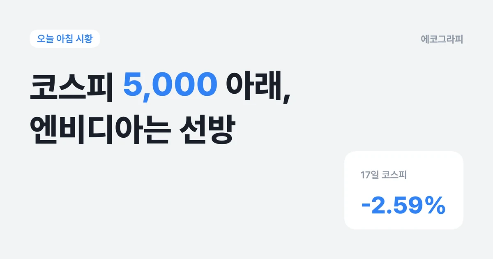
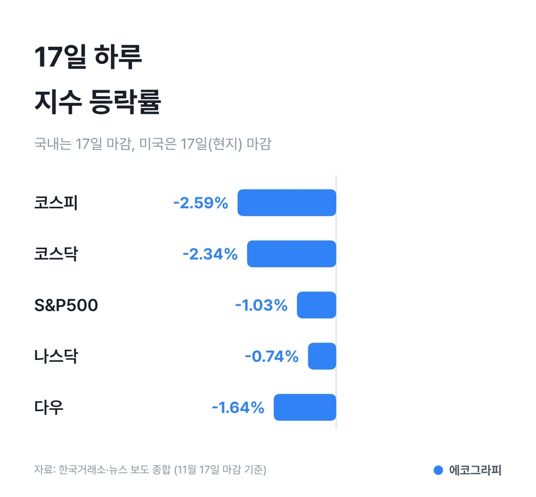
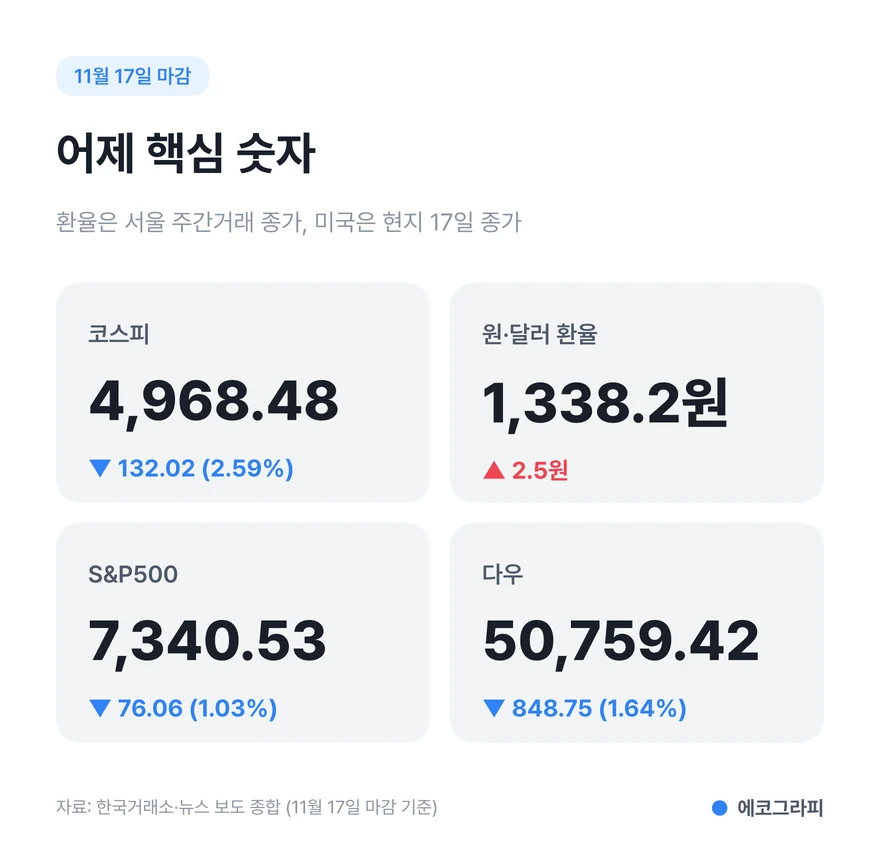
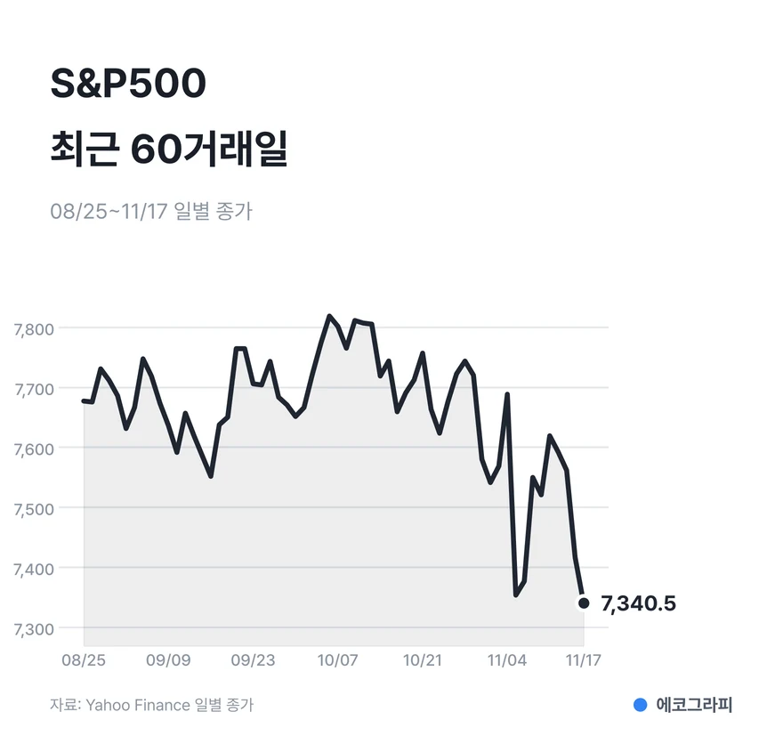
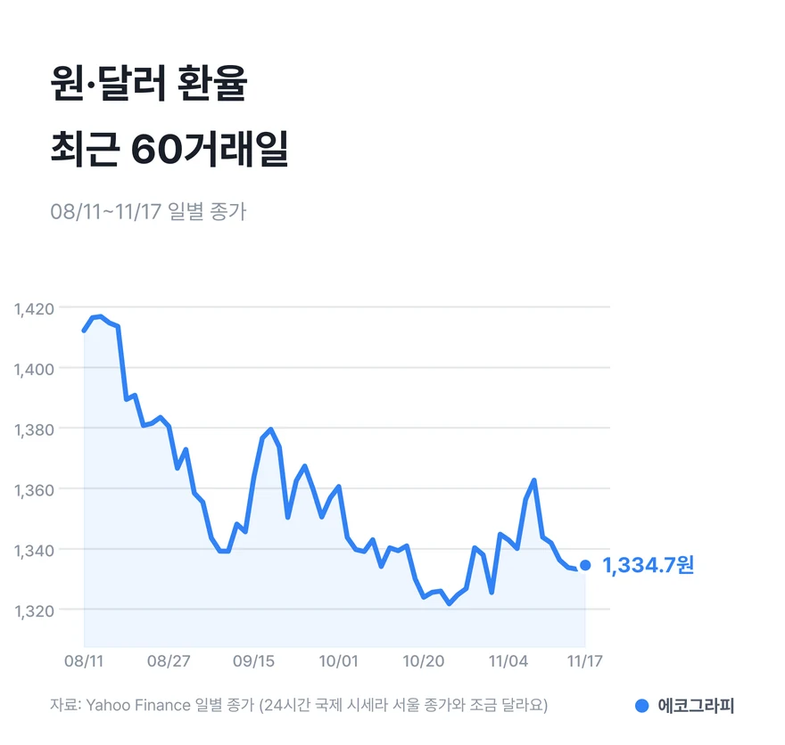
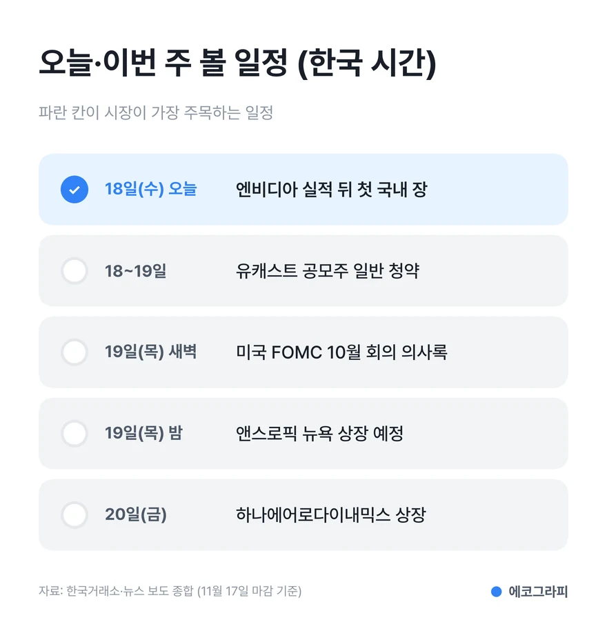

17일 코스피는 132.02포인트(2.59%) 내린 4,968.48에 마감했어요. 종가 기준으로 5,000선 아래는 약 9개월 반 만이에요. 코스닥도 650.06(-2.34%)으로 함께 내렸어요.
이번에도 외국인이 코스피에서 약 1조 4,430억 원을 팔았어요. 기관(약 5,393억 원)과 개인(약 4,261억 원)이 사들였지만 막기엔 부족했어요. 삼성전자(-3.30%)·SK하이닉스(-1.96%)를 비롯해 시가총액 상위 20개 종목이 모두 내렸어요. 원·달러 환율은 1,338.2원으로 2.5원 올랐어요.
같은 날 코스닥에 상장한 공모주 이야기는 어제 저녁 글: 옵토닉스 상장 첫날, 시초가 +158%에서 종가 +51.4%로에 정리해 뒀어요.

미국은 다우 50,759.42(-1.64%), S&P500 7,340.53(-1.03%), 나스닥 24,328.38(-0.74%)로 마감했어요. S&P500과 나스닥이 함께 4거래일 연속 내린 건 9월 이후 처음이고, S&P500은 6월 이후 가장 낮은 수준까지 내려왔어요.
이번엔 반도체보다 소프트웨어·은행·항공주가 더 약했어요. 실적 발표를 앞둔 엔비디아는 0.44% 내리는 데 그쳤어요. 시장 불안을 보여 주는 VIX(변동성지수)는 25~26선으로 하루 새 10% 넘게 올랐어요.

미국 장이 끝난 뒤 엔비디아가 3분기(8~10월) 실적을 내놨어요. 젠슨 황이 물러난 뒤 처음 하는 발표라 관심이 컸어요.
한 줄 정리: 지난 며칠 시장을 누른 건 "AI 투자가 꺾이는 것 아닐까"라는 걱정이었어요. 오늘 국내 장에서는 이 실적이 그 걱정을 얼마나 덜어 줄지가 관심이에요.
S&P500은 최근 고점에서 꾸준히 내려와 7,300선이 됐어요. 오래 보는 기준선인 200일 이동평균선 근처까지 밀렸다는 점도 기사에 자주 나왔어요.

원·달러 환율은 8월 1,410원대에서 내려와 최근 한 달은 1,320~1,360원 사이에 머물고 있어요. 외국인이 주식을 크게 팔아도 환율이 크게 뛰지 않는 흐름이에요.

오늘은 엔비디아 실적이 나온 뒤 처음 열리는 국내 장이에요. 반도체주가 어떻게 반응하는지가 먼저 보일 거예요. 공모주는 유캐스트 일반 청약이 오늘부터 이틀 동안 진행되고, 같은 날 청약 예정이던 에스에프씨는 상장을 철회했어요. 한국 시간 목요일 새벽엔 미국 FOMC 의사록이 나와요.

오늘 해볼 것: 좋은 실적이 나와도 하루 만에 흐름이 바뀌지 않을 수 있어요. 아침 시세보다 장 마감 때 외국인 매매 방향을 한 번 확인해 보세요.
5,000은 숫자로 기억하기 쉬운 '심리적 기준선'이에요. 그 자체로 경제가 달라지는 건 아니지만, 이런 선이 깨지면 투자 심리가 더 위축되기도 해요.
반도체 비중이 큰 코스피는 엔비디아 소식에 영향을 많이 받아요. 다만 금리·환율·외국인 수급 같은 다른 요인도 함께 작용해서, 꼭 같이 오른다고 할 수는 없어요.
정규장이 끝난 뒤 따로 열리는 거래예요. 거래량이 적어서 다음 날 정규장에서 가격이 달라지는 경우도 많아요.
네, 이번 공모는 철회했어요. 보도에 따르면 내년 초 다시 상장을 추진할 계획이에요.
※ 2026년 11월 기준으로 정리한 글입니다. 세율·제도는 바뀔 수 있으니 거래 전 증권사·국세청 안내를 한 번 더 확인하세요. 특정 종목·상품의 매수·매도 권유가 아닙니다.